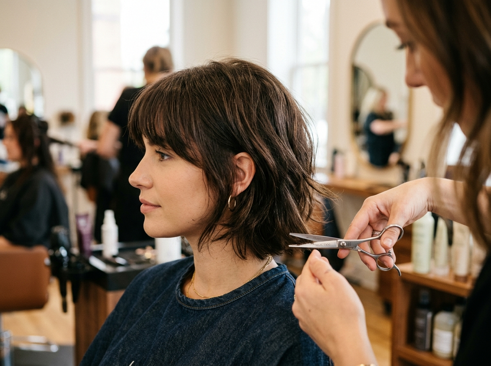

Galerie
Réalisations récentes
Chaque coiffure est réalisée à domicile, avec le même soin qu'en salon. Survolez, inspirez-vous — puis montrez-moi ce qui vous plaît sur WhatsApp.





De nouvelles réalisations sont ajoutées régulièrement — abonnez-vous sur Instagram pour suivre le fil au quotidien.
Réservez votre
créneau
Écrire sur WhatsApp ↗
Oran centre · Bir El Djir · Es Sénia · Canastel · et alentours